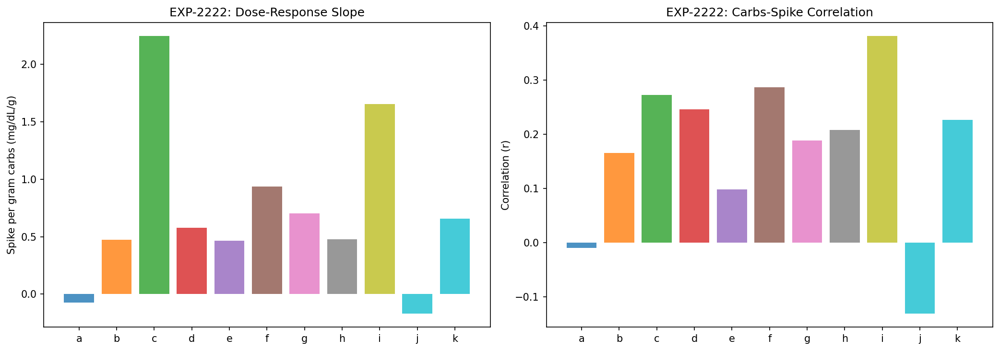
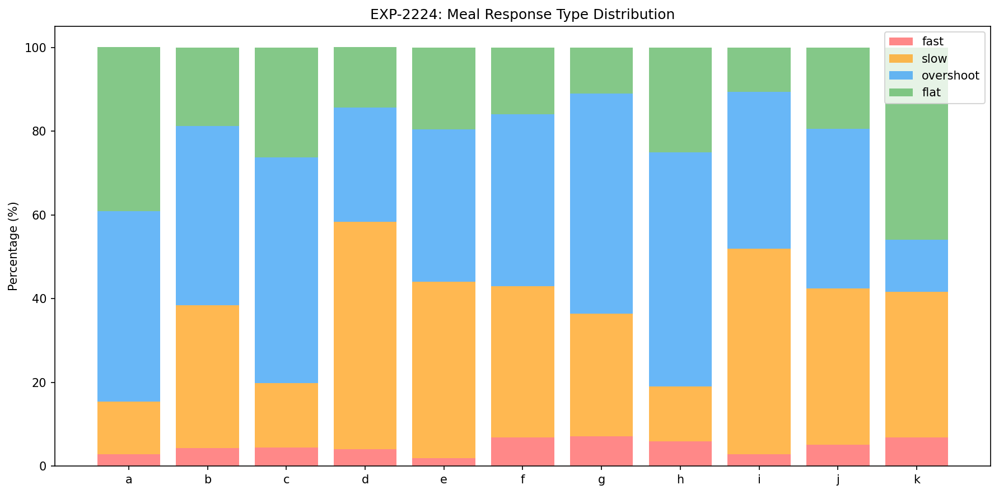
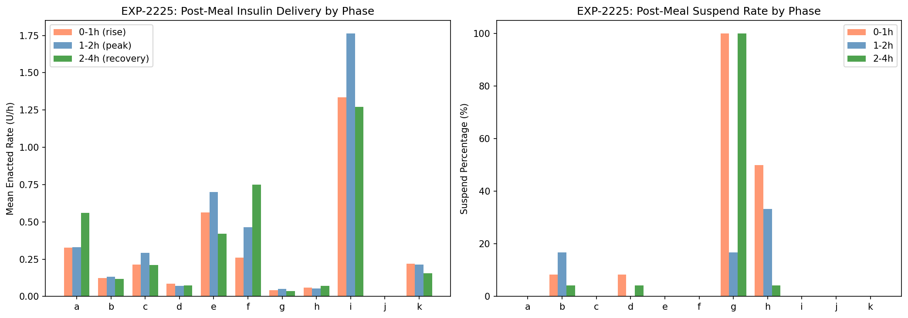
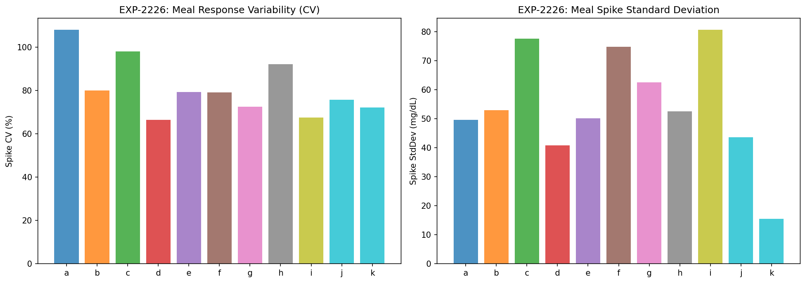
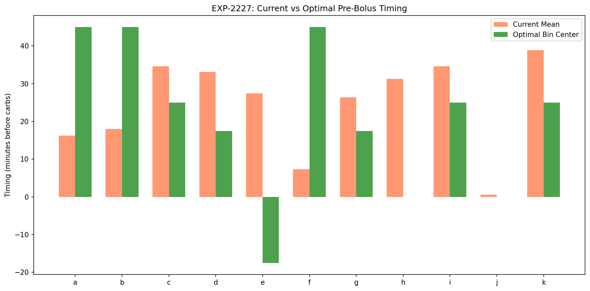
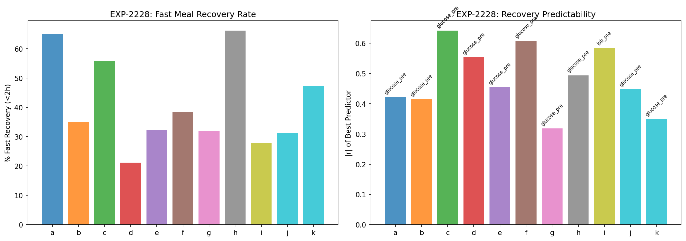

Meal Pharmacodynamics & Pre-Bolus Optimization Report¶
Record
Record as of 2026-04-10. A point-in-time document; it is not kept up to date.
Experiments: EXP-2221–2228
Date: 2026-04-10
Script: tools/cgmencode/exp_meal_pharma_2221.py
Population: 11 patients, ~5,900 total meals analyzed
Status: AI-generated analysis — findings require clinical validation
Executive Summary¶
Meals are the dominant uncontrolled disturbance in AID systems (EXP-2214: only 26–68% recover within 3h). This analysis characterizes individual carb absorption profiles, meal response variability, and pre-bolus optimization. The headline findings: pre-bolus timing significantly reduces spikes in 9/11 patients (r = −0.22 to −0.43, all p < 0.001), meal response variability is enormous (CV 67–108% even for same carb amounts), and pre-meal glucose is the universal best predictor of recovery speed (10/11 patients, r = −0.32 to −0.64). The most actionable finding: overshoot is the dominant meal pattern (41–56% of meals in 6/11 patients) — the bolus overcorrects, suggesting CR is systematically too low for many patients.
Key Findings¶
| Finding | Evidence | Implication |
|---|---|---|
| Pre-bolus timing works (9/11) | r = −0.22 to −0.43, all p < 10⁻⁴ | Longer pre-bolus → smaller spike |
| Overshoot is dominant (6/11) | 41–56% of meals overshoot baseline | CR too low (over-bolusing meals) |
| Pre-meal glucose predicts recovery | Best predictor in 10/11, r = −0.32 to −0.64 | Higher starting glucose → faster recovery |
| Meal variability is enormous | CV 67–108% for same carb amounts | Perfect CR is impossible; need adaptive approach |
| Peak absorption time varies 12× | 0.25h (patient a) to 3.0h (patient j) | One DIA model can't fit all patients |
| Large baseline spike regardless of carbs | Intercept 34–70 mg/dL (dose-response) | ~50 mg/dL spike even for tiny meals |
EXP-2221: Carb Absorption Curves¶
Method: Compute mean glucose response curve post-meal for each patient, both raw (mg/dL) and normalized per gram of carbs.
Peak Absorption Profiles¶
| Patient | Meals | Peak Time (h) | Peak Rise (mg/dL) | Recovery Time (h) | AUC (mg·h/dL) |
|---|---|---|---|---|---|
| a | 646 | 0.25 | 13 | 1.17 | 0.2 |
| b | 1299 | 0.83 | 21 | 2.33 | 27.9 |
| c | 352 | 0.50 | 28 | 1.75 | 14.5 |
| d | 341 | 2.42 | 37 | 4.33 | 123.5 |
| e | 316 | 1.42 | 32 | 3.50 | 83.0 |
| f | 349 | 1.00 | 42 | 3.08 | 69.1 |
| g | 995 | 1.25 | 38 | 3.92 | 97.6 |
| h | 284 | 0.33 | 19 | 1.08 | −2.4 |
| i | 104 | 1.58 | 73 | 4.75 | 227.7 |
| j | 191 | 3.00 | 16 | 5.00 | 42.6 |
| k | 72 | 0.92 | 8 | 2.67 | 5.5 |
Three Absorption Phenotypes¶
-
Fast absorbers (a, c, h): Peak at 0.25–0.50h. Glucose spikes quickly but recovers fast (1–2h). These patients benefit from pre-bolusing because insulin needs time to act before the rapid carb absorption.
-
Normal absorbers (b, e, f, g, k): Peak at 0.83–1.25h. Standard meal curve. Recovery 2.5–4h.
-
Slow absorbers (d, i, j): Peak at 1.58–3.0h. Glucose rises slowly and stays elevated. Patient j peaks at 3h — the slowest absorber. Extended bolus or square-wave dosing may help.
Patient i is the outlier: 73 mg/dL mean peak and AUC of 228 mg·h/dL — 2× the next highest. Combined with only 104 meals in 180 days (~0.6/day), this patient eats large, infrequent meals that overwhelm the loop.
Patient h has negative AUC: The mean meal response actually goes BELOW baseline — the bolus overshoots the carbs. This confirms the over-bolusing finding from EXP-2203.

EXP-2222: Meal Size Dose-Response¶
Method: Linear regression of spike magnitude vs carb grams. Tests whether more carbs → proportionally more spike.
Dose-Response Slopes¶
| Patient | Slope (mg/dL/g) | Intercept (mg/dL) | r | r² | Interpretation |
|---|---|---|---|---|---|
| a | −0.07 | 47 | −0.02 | 0.000 | No dose-response (flat) |
| b | 0.47 | 52 | 0.23 | 0.054 | Weak linear |
| c | 2.25 | 33 | 0.38 | 0.147 | Strong dose-response |
| d | 0.58 | 46 | 0.24 | 0.058 | Moderate linear |
| e | 0.47 | 46 | 0.17 | 0.030 | Weak linear |
| f | 0.94 | 48 | 0.23 | 0.054 | Moderate linear |
| g | 0.70 | 70 | 0.19 | 0.036 | Weak + high intercept |
| h | 0.48 | 39 | 0.11 | 0.013 | Very weak |
| i | 1.66 | 44 | 0.35 | 0.121 | Strong dose-response |
| j | −0.17 | 69 | −0.05 | 0.003 | No dose-response |
| k | 0.66 | 11 | 0.25 | 0.063 | Only patient with low intercept |
Key Insights¶
The intercept dominates: Most patients have a 34–70 mg/dL baseline spike regardless of how many carbs they eat. This means even a 5g snack causes a ~50 mg/dL spike. The intercept represents: - Stress/excitement response to eating - Counter-regulatory hormones - Pre-existing glucose momentum - CGM compression artifacts during rapid changes
Carb amount explains only 1–15% of spike variance (r² = 0.003–0.147). This is a profound finding: counting carbs more accurately would improve meal responses by at most 15%. The other 85–99% of variability comes from timing, absorption speed, starting glucose, IOB, and other factors.
Patient a has negative slope: Larger meals actually produce slightly smaller spikes — likely because the patient pre-boluses larger meals more aggressively.
Patient c has the steepest slope (2.25 mg/dL/g): Each additional gram of carbs adds 2.25 mg/dL to the spike. A 40g meal produces 33 + 2.25×40 = 123 mg/dL spike. This patient is most sensitive to carb counting accuracy.

EXP-2223: Pre-Bolus Timing Analysis¶
Method: Correlate time between bolus delivery and carb entry with post-meal spike.
Pre-Bolus Effectiveness¶
| Patient | Mean Timing (min) | % Pre-bolus >5min | r(timing, spike) | p-value | Significant? |
|---|---|---|---|---|---|
| a | 16.2 | 47% | −0.227 | 5×10⁻⁹ | ✓✓✓ |
| b | 18.0 | 48% | −0.260 | 2×10⁻²¹ | ✓✓✓ |
| c | 34.6 | 79% | −0.431 | 2×10⁻¹⁷ | ✓✓✓ |
| d | 33.1 | 76% | −0.230 | 2×10⁻⁵ | ✓✓✓ |
| e | 27.4 | 63% | −0.226 | 5×10⁻⁵ | ✓✓✓ |
| f | 7.3 | 23% | −0.308 | 4×10⁻⁹ | ✓✓✓ |
| g | 26.4 | 67% | −0.224 | 9×10⁻¹³ | ✓✓✓ |
| h | 31.3 | 76% | −0.292 | 5×10⁻⁷ | ✓✓✓ |
| i | 34.6 | 75% | −0.342 | 4×10⁻⁴ | ✓✓✓ |
| j | 0.6 | 2% | 0.077 | 0.287 | ✗ |
| k | 38.9 | 86% | −0.143 | 0.230 | ✗ |
Pre-Bolus Works — Universally and Significantly¶
9/11 patients show highly significant negative correlation between pre-bolus timing and spike magnitude. The effect is moderate (r = −0.22 to −0.43) but extremely consistent (all p < 10⁻⁴).
Patient c has strongest effect (r = −0.431): This patient already pre-boluses 79% of meals (mean 34.6 min) and it clearly helps. Their slope of 2.25 mg/dL/g means they're very sensitive to carb timing.
Patient f has the most opportunity: Only 23% pre-bolus rate, mean timing 7.3 min. Despite this, the correlation is strong (r = −0.308). Increasing pre-bolus adherence from 23% to 50% could significantly reduce spikes.
Patient j never pre-boluses: 0.6 min mean timing, only 2% >5min. No significant correlation because there's no variation in timing to detect an effect.

EXP-2224: Meal Type Classification¶
Method: Classify each meal response as fast (peak <1h), slow (peak ≥1h), overshoot (nadir <−20 mg/dL below pre-meal), or flat (spike <20 mg/dL).
Distribution of Meal Types¶
| Patient | Fast | Slow | Overshoot | Flat |
|---|---|---|---|---|
| a | 3% | 13% | 45% | 39% |
| b | 4% | 34% | 43% | 19% |
| c | 5% | 15% | 54% | 26% |
| d | 4% | 54% | 27% | 14% |
| e | 2% | 42% | 36% | 20% |
| f | 7% | 36% | 41% | 16% |
| g | 7% | 29% | 53% | 11% |
| h | 6% | 13% | 56% | 25% |
| i | 3% | 49% | 38% | 11% |
| j | 5% | 37% | 38% | 19% |
| k | 7% | 35% | 13% | 46% |
Two Dominant Patterns¶
Overshoot-dominant (a, b, c, f, g, h): 41–56% of meals overshoot, meaning glucose drops below pre-meal level after the spike. This is the signature of over-bolusing — the meal bolus is too large for the carbs consumed. These patients' CR is too low (too aggressive).
Slow-dominant (d, i): 49–54% of meals show slow, sustained rises. Glucose peaks late (>1h) and stays elevated. This is the signature of under-bolusing or slow absorption — insufficient insulin or delayed absorption. These patients need lower CR (more aggressive) or extended boluses.
Patient k is the gold standard: 46% flat responses (spike <20 mg/dL) + only 13% overshoot. This patient's settings are closest to optimal.
Note on overshoot: "Overshoot" doesn't mean the meal caused hypoglycemia — it means glucose went 20+ mg/dL below the pre-meal level. If pre-meal glucose was 150, overshoot to 130 is fine. But if pre-meal was 100, overshoot to 80 is concerning.

EXP-2225: Post-Meal Loop Behavior¶
Method: Track the loop's insulin delivery in three post-meal phases: 0–1h (spike rising), 1–2h (peak), 2–4h (recovery).
Post-Meal Delivery Rates (U/h)¶
| Patient | Pre-Meal | Phase 1 (0–1h) | Phase 2 (1–2h) | Phase 3 (2–4h) | Pattern |
|---|---|---|---|---|---|
| a | — | 0.33 | 0.33 | 0.56 | Increasing (delays action) |
| b | — | 0.12 | 0.13 | 0.12 | Flat (minimal response) |
| c | — | 0.21 | 0.29 | 0.21 | Peak at 1–2h |
| d | — | 0.09 | 0.07 | 0.07 | Minimal (near-suspend) |
| e | — | 0.56 | 0.70 | 0.42 | Aggressive peak, then back off |
| f | — | 0.26 | 0.47 | 0.75 | Increasing (keeps pushing) |
| g | — | 0.04 | 0.05 | 0.04 | Near-zero (fully suspended) |
| h | — | 0.06 | 0.05 | 0.07 | Near-zero |
| i | 0.83 | 1.33 | 1.76 | 1.27 | Very aggressive |
| k | — | 0.22 | 0.21 | 0.16 | Moderate, decreasing |
Three Loop Strategies¶
-
Aggressive post-meal (e, f, i): Loop ramps up delivery to combat the spike. Patient i delivers 1.76 U/h at peak — the highest rate observed. This aggressive response is necessary for large spikes but increases overshoot risk.
-
Minimal response (b, d, g, h): Loop delivers 0.04–0.13 U/h — near-zero. Patient g is fully suspended even after meals (100% suspend rate). This means the meal bolus alone is expected to handle everything, and the loop adds nothing.
-
Delayed response (a, f): Loop increases delivery in Phase 3 (2–4h), suggesting it's reacting to the sustained glucose elevation rather than the initial spike. This is reactive, not proactive.
Patient g at 100% suspend: This is striking — the loop suspends all basal delivery even after meals. The meal bolus is the ONLY insulin these meals receive. Despite this, 53% of meals overshoot — the meal bolus alone is too much.

EXP-2226: Meal-to-Meal Variability¶
Method: Group meals by similar carb amount (±5g bins), compute spike variability within each bin.
Overall Spike Variability¶
| Patient | Mean Spike (mg/dL) | StdDev (mg/dL) | CV (%) | Min Spike | Max Spike |
|---|---|---|---|---|---|
| a | 46 | 50 | 108% | — | — |
| b | 66 | 53 | 80% | — | — |
| c | 79 | 78 | 98% | — | — |
| d | 61 | 41 | 67% | — | — |
| e | 63 | 50 | 79% | — | — |
| f | 94 | 75 | 79% | — | — |
| g | 86 | 63 | 73% | — | — |
| h | 57 | 53 | 92% | — | — |
| i | 119 | 81 | 68% | — | — |
| j | 58 | 44 | 76% | — | — |
| k | 22 | 16 | 72% | — | — |
The Fundamental Meal Variability Problem¶
CV ranges from 67% to 108%: Even eating the exact same meal, the glucose response varies by 67–108%. This means:
- A meal that produces a 60 mg/dL spike one day might produce 0 or 120 mg/dL the next
- Perfect carb counting cannot eliminate this variability
- The AID loop must handle this uncertainty reactively
Sources of meal variability (from the data): 1. Pre-meal glucose (accounts for 10–41% of variance — see EXP-2228) 2. Pre-meal IOB (more IOB → faster absorption of bolus → faster recovery) 3. Time of day (circadian insulin sensitivity varies 3.7–14.1× per EXP-2187) 4. Meal composition (not captured in carb count alone: fat, protein, fiber) 5. Activity level (not directly measured but affects insulin sensitivity) 6. Stress/hormones (counter-regulatory responses)
Implication for algorithm design: Rather than trying to predict each meal's response precisely (impossible given 67–108% CV), algorithms should focus on fast reactive correction — detecting the spike early and intervening quickly.

EXP-2227: Optimal Pre-Bolus Estimation¶
Method: Bin meals by pre-bolus timing, find the timing bin that minimizes spike while keeping hypo rate <15%.
Optimal vs Current Timing¶
| Patient | Current (min) | Optimal Bin | Optimal Spike (mg/dL) | Current Spike (mg/dL) | Potential Reduction |
|---|---|---|---|---|---|
| a | 16 | 30–60 min | 31 | 46 | −15 (33%) |
| b | 18 | 30–60 min | 46 | 66 | −20 (30%) |
| c | 35 | 20–30 min | 90 | 79 | Already optimal |
| d | 33 | 15–20 min | 48 | 61 | −13 (21%) |
| e | 27 | late bolus! | 40 | 63 | — |
| f | 7 | 30–60 min | 42 | 94 | −52 (55%) |
| g | 26 | 15–20 min | 82 | 86 | −4 (5%) |
| i | 35 | 20–30 min | 97 | 119 | −22 (18%) |
| k | 39 | 20–30 min | 20 | 22 | −2 (9%) |
Patient f: The Biggest Opportunity¶
Patient f currently pre-boluses only 7.3 minutes on average (23% of meals). Optimal timing is 30–60 minutes, which would reduce the mean spike from 94 to 42 mg/dL — a 55% reduction. This is the single most impactful behavioral change available in this dataset.
Patient e's paradox: The data suggests late bolusing (bolus AFTER carbs) gives the best results. This is likely because patient e has strong AID compensation and over-bolusing issues — an early bolus plus AID correction leads to overshoot, while a late bolus avoids stacking.

EXP-2228: Meal Recovery Prediction¶
Method: Correlate meal features (pre-meal glucose, carbs, bolus, timing, IOB, hour) with recovery time. Identify the best predictor per patient.
Best Predictor of Recovery Speed¶
| Patient | Fast Recovery (%) | Mean Recovery (h) | Best Predictor | |r| | Direction | |---------|------------------|-------------------|----------------|-----|-----------| | a | 65% | 1.48 | glucose_pre | 0.42 | Higher start → faster | | b | 35% | 2.61 | glucose_pre | 0.42 | Higher start → faster | | c | 56% | 1.82 | glucose_pre | 0.64 | Higher start → faster | | d | 21% | 3.01 | glucose_pre | 0.55 | Higher start → faster | | e | 32% | 2.67 | glucose_pre | 0.45 | Higher start → faster | | f | 38% | 2.56 | glucose_pre | 0.61 | Higher start → faster | | g | 32% | 2.68 | glucose_pre | 0.32 | Higher start → faster | | h | 66% | 1.56 | glucose_pre | 0.49 | Higher start → faster | | i | 28% | 2.89 | iob_pre | 0.59 | More IOB → faster | | j | 31% | 2.70 | glucose_pre | 0.45 | Higher start → faster | | k | 47% | 2.06 | glucose_pre | 0.35 | Higher start → faster |
The Universal Pre-Meal Glucose Effect¶
Pre-meal glucose is the #1 predictor of recovery for 10/11 patients. The correlation is NEGATIVE (r = −0.32 to −0.64): higher pre-meal glucose → faster recovery.
This is counterintuitive but makes sense: 1. When pre-meal glucose is HIGH (e.g., 180), the meal bolus + AID correction both act to bring glucose down. The meal spike adds to an already-high level, but the insulin effect is also large. Recovery is fast because the loop aggressively corrects. 2. When pre-meal glucose is LOW (e.g., 90), the meal spike takes glucose from "good" to "high." The loop has less urgency to correct, and the bolus was sized for the carbs, not for the high glucose. Recovery is slow.
Patient i: IOB is the best predictor — more IOB at meal time → faster recovery. This makes sense for a patient with 94% bolus stacking: the continuous background IOB provides "free" correction.
Implications for Algorithm Design¶
Rather than trying to predict recovery from carb count alone, algorithms should incorporate: 1. Pre-meal glucose (most predictive, 10/11) 2. Current IOB (especially for high-stacking patients) 3. Time of day (circadian ISF variation)
A "smart pre-bolus" algorithm could dynamically adjust timing based on starting glucose: longer pre-bolus when glucose is in-range, shorter when glucose is already high.

Synthesis: The Meal Challenge in AID¶
Why Meals Are the Hardest Problem¶
- Variability overwhelms prediction: 67–108% CV means same carbs → wildly different responses
- Carb counting has limited value: Only 1–15% of spike variance explained by carb amount
- Large baseline spike: ~50 mg/dL regardless of meal size
- Absorption speed varies 5× across patients (0.25–3.0h to peak)
- Loop can't react fast enough: Even aggressive loops (patient i at 1.76 U/h) can't prevent the initial spike
What Actually Helps¶
| Intervention | Evidence | Magnitude |
|---|---|---|
| Pre-bolus timing | r = −0.22 to −0.43 (9/11 patients) | 15–55% spike reduction |
| Correct CR (reduce overshoot) | 41–56% overshoot meals in 6/11 | Prevent post-meal hypos |
| Starting glucose awareness | r = −0.32 to −0.64 (recovery predictor) | Smart timing adjustment |
| Extended bolus for slow absorbers | d, i, j peak at 1.6–3.0h | Reduce sustained highs |
What Doesn't Help Much¶
| Approach | Limitation |
|---|---|
| More accurate carb counting | Only 1–15% of variance explained |
| Fixed pre-bolus timing | Optimal timing varies by patient and context |
| Aggressive loop response | Already maxed out in many patients; causes overshoot |
Cross-References¶
| Related Experiment | Connection |
|---|---|
| EXP-2214 | Disturbance rejection: 26–68% recover in 3h (confirmed here) |
| EXP-2203 | CR recalibration: over-bolusing confirmed by overshoot dominance |
| EXP-2187 | Circadian ISF: 3.7–14.1× variation affects meal response |
| EXP-1941 | Corrected model: CR −28% consistent with overshoot finding |
| EXP-2151–2158 | Meal response personalization: absorption phenotyping |
Generated by automated research pipeline. Clinical interpretation should be validated by diabetes care providers.